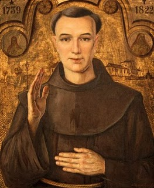
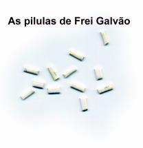
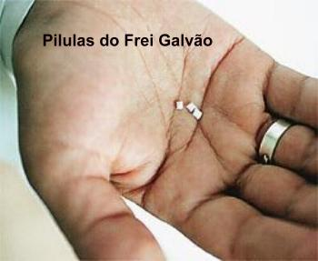
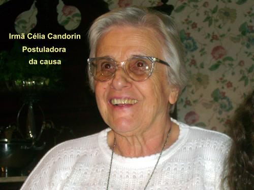
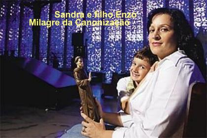
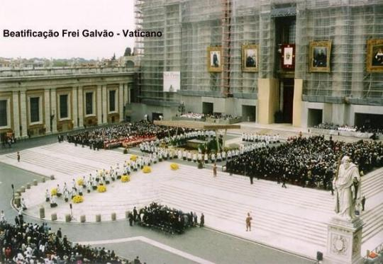
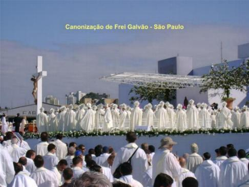
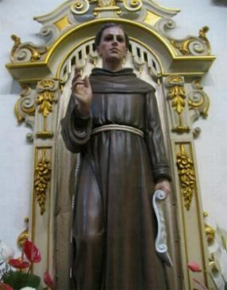
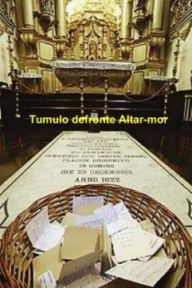

DERRADEIROS ANOS
OS SEUS DONS
Além das suas virtudes
heróicas aqui apresentadas, Frei Galvão foi agraciado com 
Um fato marcante testemunha esta realidade. Quando em Itu visitando o tenente Fernando Pais de Barros e sua esposa, senhora Maria Jorge, aceitou o convite para pernoitar em sua casa. Na hora de dormir o casal o conduziu a um quarto especialmente preparado para ele. Parando diante da porta, disse Frei Galvão: “Este quarto não me serve”. Disseram-lhe que justamente para ele fora preparado. “Mas neste não quero passar a noite, replicou, quero dormir ali” , e apontou o quarto de casal. Não houve meio senão de lhe fazer a vontade. Na manhã seguinte encontraram a cama intacta! Mas, desde aquele dia cessaram todas as desavenças que até aquela data eram constantes na vida do casal.
Eram comuns as monções, nos séculos XVIII e XIX, canoeiros profissionais que subiam ou desciam o Rio Tietê, entre as Capitanias de São Paulo e Mato Grosso. Manuel Portes era um prestigioso mestre, graças à ordem que sabia manter entre as tripulações e a escrupulosa fidelidade na entrega de dinheiro e mercadorias, entre Porto Feliz e Cuiabá. Seus subordinados o temiam, pois não vacilava em castigar o faltoso do modo mais rude. Um de seus homens, talvez de nome Apolinário, caboclo indolente e pouco afeito a disciplina, vinha lhe causando aborrecimentos. Já o repreendera varias vezes, o homem se humilhava, mas não se emendava. Naquele dia abicado as canoas à barranca do Tietê e desembarcadas as equipagens para o jantar, pusera-se Manuel Portes a fazer a costumeira revista e ronda diária. E aí encontrou novamente o danado caboclo em falta. O sangue lhe ferveu e o levou a pegar um açoite e castigar vigorosamente o remeiro, que não se defendeu.
Pouco depois estava Manuel Portes conversando com um de seus homens, quando Apolinário com um grande facão, cravou-o em suas costas e fugiu correndo. A terrível punhalada lançou-o ao solo, sangrando abundantemente.
No auge do desespero, homem cristão e temente a DEUS começou a gritar: “Meu DEUS, eu morro sem confissão! VIRGEM MÃE DE DEUS, perdão! Perdão SENHOR! Senhor Santo Antonio, interceda por mim! Dá um confessor! Venha, Frei Galvão, vem me assistir”!
As pessoas vieram socorrê-lo, mas ele estava estirado por terra, moribundo, numa poça de sangue, já com a voz sumida, pedindo a presença de um padre. De repente, viram um franciscano que chegava ligeiro, se abaixou e abraçou o agonizante, colocando a cabeça dele no seu colo. Fez um gesto com a mão para afastar os espectadores e conversou com ele em voz baixa, ouvindo a sua confissão. Assim ficou algum tempo e depois, abençoou o expirante. Levantou-se, fez um gesto de despedida com a mão e afastou-se do mesmo modo misterioso que tinha chegado. Na hora do milagre, Frei Galvão estava fazendo uma pregação em São Paulo. Interrompeu a oratória, ajoelhou-se e pediu a todos que rezassem uma Ave Maria pela salvação de um moribundo em lugar muito distante. Acabada a oração, levantou-se e continuou a prédica.
No porto de Portunduva Manuel Portes foi sepultado, e seus homens, em homenagem, na cabeceira de seu túmulo ergueram uma grande e tosca cruz de madeira, onde muitos anos depois edificaram uma Capelinha em honra a Frei Galvão. O local fica a 2 quilômetros da sede da Fazenda e a 3 quilômetros da cidade de Jaú, no Estado de São Paulo, e denomina-se Fazenda Santa Cruz, pertencente aos irmãos Dilermando e Edward Vasconcelos Romão.
O Crucifixo era a imagem que estava sempre ao alcance da mão do Santo. No Convento da Luz há diversos que ele próprio colocou, na enfermaria, no coro, Igreja e outros locais. Se desejasse presentear alguém, Frei Galvão não pensava duas vezes, era o crucifixo o melhor presente que com prazer ele oferecia. A este respeito, narra-se um fato muito interessante:
“Certa manhã, passou um médico, pelo Recolhimento da Luz, a fim de visitar Frei Galvão. Terminada a visita, o Santo ofereceu ao amigo um belo crucifixo, dizendo-lhe que era para que encaminhassem melhor os seus negócios espirituais e temporais. O médico agradeceu o presente, mas fez uma solicitação ao Santo, pedindo-lhe que guardasse o precioso crucifixo até que ele regressasse das visitas que ia fazer a alguns doentes.
Cumprido o dever profissional, o médico seguiu para casa se esquecendo de voltar ao Recolhimento para pegar o seu presente. Todavia, ao penetrar no seu consultório, cuja chave trazia consigo, com grande e comovedora surpresa viu sobre a sua mesa de trabalho, o crucifixo de Frei Galvão”.
Também recebeu o dom da levitação, que é o fenômeno místico que mantêm o corpo elevado do solo, sem qualquer apoio. No Mosteiro da Luz tem um manuscrito que narra o seguinte: “Uma velhinha, certo dia, andando pela rua, observou que Frei Galvão vinha se aproximando; reparou que andava sem pisar no chão, pelo que muito admirada lhe disse: Ué Senhor Padre, vosmecê anda sem pisar o chão? O nosso Santo sorriu e continuou o caminho sem nada dizer”.
Existem muitos outros casos interessantes e admiráveis, que descrevem o precioso dom bi-locação e outros dons, que Frei Galvão possuía, dos quais, muitos estão narrados no livro: “A VIDA DO SANTO FREI ANTONIO DE SANT’ ANNA GALVÃO, escrito por Maristela (pseudônimo da Madre Beatriz, religiosa da Ordem das Concepcionista, Mosteiro de Portaceli, Ponta Grossa, Estado do Paraná), é um livro que contém um precioso trabalho de pesquisa feito pela Irmã.
A VIRTUDE DA CARIDADE
 Sua
grande preocupação era o Amor de DEUS. Amar a DEUS com todas as forças e por
todos os meios era o objetivo maior da existência do Santo.
Sua
grande preocupação era o Amor de DEUS. Amar a DEUS com todas as forças e por
todos os meios era o objetivo maior da existência do Santo.
Nos estatutos que escreveu para as Irmãs no Convento da Luz, observa-se objetivamente esta sua intenção: de elevá-las a um grau sublime de amor Divino e para isto, lhes indicava o caminho: abster-se o quanto possível das coisas do mundo, renúncia completa de si mesma, austeridade da mortificação e pobreza. Esta é a razão de tantas grades, tão estreitas clausuras e tão rigoroso silêncio. Sob a influência de seu grande espírito, belíssima floração de santidade desabrochou entre as Irmãs.
A caridade que Frei Galvão tinha pelo próximo era tão grande como a imensidão do azul celeste que se descortina diante dos nossos olhos. Todos buscavam sua Virtude na certeza de que seriam recompensados. Amparava os pobres e os socorria em suas necessidades. Aos escravos mostrava compassiva benignidade. Era um consolo para as pessoas tristes e desoladas.
“Certa vez na Vila de Itu, aonde frequentemente ia, uma senhora aflita lhe pediu que rezasse por seu filho, um moço jovem, mas de gênio irascível e de péssimo procedimento, que costumava se ausentar dias da casa. Frei Galvão consolou a pobre mãe e lhe disse que confiasse em DEUS, pois seu filho voltaria logo, completamente transformado. Pediu-lhe, porém, que nada dissesse ao rapaz sobre o assunto daquela conversação. Poucos dias depois, regressou o filho pródigo, radicalmente outro, completamente diferente: no falar e no proceder, e deste dia em diante, ele foi à alegria de sua mãe”.
COMO SURGIU A PÍLULA

A imensa caridade do Santo pelo próximo fez nascer à famosa “pílula de Frei Galvão”.
Certo dia, algumas pessoas vieram recomendar às suas orações para um rapaz que sofria terrivelmente de violentas dores provenientes de cálculo renal. Compadecido, apressou-se a rezar por ele, quando lhe ocorreu uma súbita inspiração: lembrou-se da VIRGEM e NOSSA SENHORA, e de seu impressionante, eficaz e poderoso poder intercessor junto a DEUS, para todas as causas. Então, recortou um pequeno papel branco e fino, e nele escreveu estas palavras: “Post partum, VIRGO, inviolata permansisti: DEI GENITRIX intercede pro nobis”, (latim) que significa: “Depois do parto, ó VIRGEM, permaneceste intacta: MÃE DE DEUS intercede por nós”.
Enrolou o papel na forma de minúsculo canudo e mandou que o dessem ao rapaz para engolir com um pouco de água. O moço, apenas ingeriu aquela pílula e expeliu grande calculo, ficando imediatamente curado. As noticias circularam ligeiras.
Tempos depois, o nosso Santo foi procurado pela manhã no Mosteiro da Luz, por um homem muito aflito. O diálogo aconteceu assim:
- Senhor Padre, minha mulher está para ser mãe.
(Respondeu Frei Galvão) – Parabéns, o Céu te manda mais um Anjo.
- Ai de mim, senhor Padre, ela está passando tão mal que temo pela sua vida!

- Oh! Pobre filho! Já vou rezar por ela!- DEUS lhe pague senhor Padre. Mas agradeceria se o senhor me desse também um remédio para ela tomar.
Frei Galvão deve ter sorrido diante da simplicidade daquele homem. Mas que remédio ele poderia dar a semelhante caso? Lembrou-se então, do papelzinho da VIRGEM transformado em pílula. Fez outro igual e deu ao homem que foi voando para casa. Na tarde daquele mesmo dia, muito alegre, o homem voltou ao Mosteiro da Luz dar a notícia ao Padre, dizendo que o Anjinho tinha chegado deixando todos felizes, e que mãe e filho estavam em ótimas condições de saúde.
Estes fatos se propalaram com grande rapidez, e assim, os pedidos dos papelinhos eram muito frequentes, mesmo durante a vida do Santo.
PARTIDA PARA O EXÍLIO
Frei Galvão passou mais de setenta anos com uma santa e laboriosa existência. O Convento da Luz estava bem organizado espiritualmente e materialmente a construção estava quase terminada. Alquebrado pelos anos e austeridade, já estava na hora de buscar um descanso e esperar tranquilamente pelo dia feliz de sua alma voar desta, para uma vida melhor.
No entanto, quis NOSSO SENHOR aumentar os seus muitos méritos, oferecendo-lhe a ocasião de realizar mais uma obra para sua glória.
Em 12 de Agosto de 1811 ele recebeu do Bispado um requerimento da Irmã Manuela de Santa Clara, pedindo ao Bispo Dom Mateus de Abreu Pereira, duas ou três religiosas do Convento da Luz, para com elas e outras moças, começarem um Recolhimento na cidade de Sorocaba. No requerimento que já estava com o despacho favorável do senhor Bispo, o prelado deixava à vontade e escolha de Frei Galvão e da Madre Regente do Mosteiro da Luz, enviar as três Irmãs para Sorocaba. E o despacho do senhor Bispo, ainda dizia: “... parece-me muito profícuo ao serviço de DEUS, que o Reverendo Padre Definidor Frei Galvão, podendo e querendo as acompanhe, dê os fundamentos e direções ao novo Recolhimento; concedo-lhe toda e plena autoridade de Capelão, para por si e por outro fazer quanto for necessário, e gozar naquele Recolhimento de todas as faculdades de que goza no Recolhimento da Luz”.
Vendo nestas palavras a vontade dos superiores, o nosso Santo prontamente se dispôs a obedecer, não olhando as dificuldades, o seu cansaço e o peso dos anos. Escolheu as Irmãs Domiciana Maria da Assunção e suas sobrinhas: Rita do Coração de Jesus e Isabel da Visitação, elegendo esta última para Regente do novo Recolhimento. No dia 19 de Agosto já estavam a caminho de Sorocaba.
Após a sua chegada, já possuindo grande prática administrativa, em poucos dias, ou seja, no dia 25 de Agosto de 1811, o Recolhimento Santa Clara já estava totalmente instalado.
Frei Galvão ficou em Sorocaba na direção do Recolhimento onze meses e depois retornou a São Paulo com as Irmãs Domiciana e Rita, ficando em Sorocaba sua sobrinha Irmã Isabel da Visitação, como Madre Regente do Recolhimento Santa Clara.
Depois desta fundação, Frei Galvão não saiu mais de São Paulo, andava muito cansado, esgotado fisicamente e as enfermidades começaram a visitá-lo com frequência. Tão enfraquecido estava que não conseguia fazer o percurso do Convento de São Francisco, onde residia, até o Mosteiro da Luz, no Campo do Guaré, passando pela “descida da figueira de São Bento”, hoje Rua Florêncio de Abreu.
Em atenção ao seu estado físico debilitado, os superiores lhe concederam a licença de residir no Recolhimento da Luz, continuando assim, a cuidar daquela casa que construiu com tanto empenho e amor. O nosso Santo escolheu para seu aposento o mais estreito e humilde cantinho. Seu leito era feito de taipa, alguns palmos acima do chão, no fundo da Igreja, por traz do altar-mor onde estava o sacrário. Maravilhoso local para se descansar, bem ao lado de JESUS Sacramentado!
E longe de pensar que seus dias eram monótonos, tristes e sombrios. Continuava a ser procurado intensamente pelas pessoas e atendia a todos, com a mesma disposição, dando atenção, conforto e conselho aos que necessitavam.
Presume-se que tenha passado os três últimos anos de sua vida acamado, ou pelo menos, quase sempre deitado na cama. Era servido pelos escravos da casa e as Irmãs, carinhosamente cuidavam da sua alimentação e dos medicamentos para aliviar os seus males.
Interessante fato aconteceu nos seus últimos anos de vida. A senhora Maria Antonia de Jesus das Chagas Silva, que era mãe de uma das religiosas do Convento, veio procurá-lo trazendo uma menina de nove anos a quem recomendara: “que se comportasse bem, porque Frei Galvão era Santo e adivinhava quando as crianças não eram boas”. Enquanto a mãe conversava com o Santo, a pequena meio assustada, não despregava os olhos dele. Frei Galvão observando, afetuosamente lhe perguntou: “E você, minha menina, o que vai ser quando for moça”? Ao que ela respondeu: “Quero ser Freira neste Convento”. Colocando a sagrada mão sobre a cabecinha da criança, o venerando fundador em tom profético, falou: “Sim, filhinha, serás religiosa deste Convento”.
Passados dez anos, Frei Galvão já tinha falecido, a menina de outrora contando dezenove anos de idade, entrou no Convento da Luz, onde recebeu o nome de Sóror Maria do Sacramento. Ali passou uma vida muito santa e perfeita, sendo a consolação e alegria de suas Irmãs pelo bom gênio e agradável temperamento.
Chegando o mês de Dezembro do ano 1822, o estado de saúde de nosso Santo declinava a cada dia mais e mais, o desenlace se fazia pressentir. E realmente aconteceu, às 10 horas da manhã do dia 23 de Dezembro de 1822, havendo recebido todos os sacramentos, expirou Frei Antonio de Sant’ Ana Galvão silenciosamente no SENHOR, com 84 anos de idade incompletos.
O luto e a saudade invadiram São Paulo. Grande multidão de pessoas acorreu à Igreja do Convento da Luz, querendo ver e honrar aquele Santo amigo, prestando-lhe uma última homenagem. O corpo foi colocado em sepultura aberta no centro da Igreja do Convento, em frente ao altar-mor. Pouco tempo depois colocaram uma lápide com o seguinte epitáfio: “Aqui jaz Frei Antonio de Sant’ Anna Galvão, ínclito fundador e reitor desta casa religiosa, que, tendo sua alma sempre em suas mãos, placidamente faleceu no SENHOR no dia 23 de Dezembro do ano de 1822”.
BEATIFICAÇÃO E CANONIZAÇÃO
Em 1990 a Irmã Célia Candorin
começou a trabalhar em benefício da causa de Frei Galvão, e logo no ano 
O estudo do processo em Roma decorreu de 1993 a 2007, oportunidade em que também foram estudados os dois milagres escolhidos, exigidos pela Igreja, e analisados por uma comissão de especialistas em medicina.
A celebração da “Canonização” deveria ser feita em Roma, mas a pedido da Igreja e do povo brasileiro, o Papa Bento XVI paternalmente e com boa vontade se dignou vir celebrá-la na cidade de São Paulo, no dia 11 de Maio de 2007.
MILAGRE PARA A BEATIFICAÇÃO
Trata-se da cura de uma criança de 4 anos, Daniella Cristina da Silva, residente na Vila Brasilândia, Rua Padre José Materni, 598, em São Paulo (capital), SP.
Ela, filha de Valdecir da Silva e Jacira Francisco da Silva, desde o nascimento em 9 de Março de 1986, era uma criança miudinha e de saúde delicada.
Em Maio de 1990 foi internada com complicações bronco-pulmonares e tratada com antibióticos. Apresentando melhora, voltou para casa. Mas, logo a seguir, apresentou sonolência e crises convulsivas, sendo na noite de 24 de Maio de 1990, internada no Hospital Emílio Ribas, em São Paulo, com suspeita de meningite ou hepatite. Com um quadro gravíssimo da doença, foi levada para a UTI, com diagnóstico de “insuficiência hepática fulminante”, ainda sofreu parada cardiorrespiratória.
Daniella esteve treze dias na UTI, passando depois para a Seção de Pediatria onde permaneceu até o dia 21 de Junho de 1990, quando recebeu a alta hospitalar “considerada totalmente curada”.
A intervenção Divina foi pedida pelos pais, parentes, amigos e religiosas do Mosteiro da Luz, que unidos numa única prece, desde o dia 25 de Maio, suplicaram com muita fé a intercessão de Frei Galvão para ele conseguir de DEUS a graça da cura de Daniella.
No evento da “Beatificação” de Frei Antonio de Sant’ Anna Galvão, em 1998, Daniella com 12 anos de idade, era uma menina saudável e alegre. Esteve presente à celebração em Roma.
MILAGRE PARA A CANONIZAÇÃO

Em 1993 e 1994, a senhora Sandra sofreu três abortos espontâneos devido ao seu útero bicorne. Com tal deformação era impossível levar a termo qualquer gravidez, pois o feto não tinha espaço suficiente para crescimento e pela própria natureza, forçava o aborto.
Estava nesta situação, quando em Maio de 1999 ficou grávida novamente. Em Agosto, a ginecologista Doutora Vera Lúcia Delascio Lopes, fez uma cerclagem cervical, pois a gravidez era considerada de altíssimo risco. Sandra sabia que, no momento do parto, poderia ter uma hemorragia e morrer.
Apesar do prognóstico médico, a gestação evoluiu normalmente, com repouso absoluto de Junho a Novembro. Foi decidido "parto cesário" no dia 11 de Dezembro de 1999. Não houve qualquer complicação, a criança nasceu pesando quase dois quilos (1,995 Kg) e medindo quarenta e dois (42) centímetros, mas apresentou problemas respiratórios com uma doença das membranas hialinas. Foi entubada, porém teve um quadro de boa evolução muito rápida, sendo extubada no dia 12, dia seguinte, à tarde. Recebeu alta hospitalar no dia 19 de Dezembro de 1999, completamente com saúde. O menino foi batizado com o nome de Enzo.
O êxito favorável deste caso raro foi atribuído à intercessão do Beato Frei Antonio de Sant’ Anna Galvão, que foi invocado pela família, com muita devoção desde o início e durante toda a gravidez, com muitas orações e súplicas, especialmente por Sandra, que além das contínuas novenas, também tomou as “pílulas de Frei Galvão”, com fé e imensa convicção.
No exame do processo canônico, os peritos médicos na sessão do dia 18 de Janeiro de 2006, aprovaram o fato por unanimidade, declarando ser “cientificamente inexplicável no seu conjunto, segundo os atuais conhecimentos científicos”.
Sua Santidade, o Papa Bento XVI, depois de reconhecer o fato, autorizou no dia 12 de Dezembro de 2006, a Congregação das Causas dos Santos a promulgar o decreto, a respeito do milagre atribuído à intercessão do Beato Frei Antonio de Sant’ Anna Galvão.



